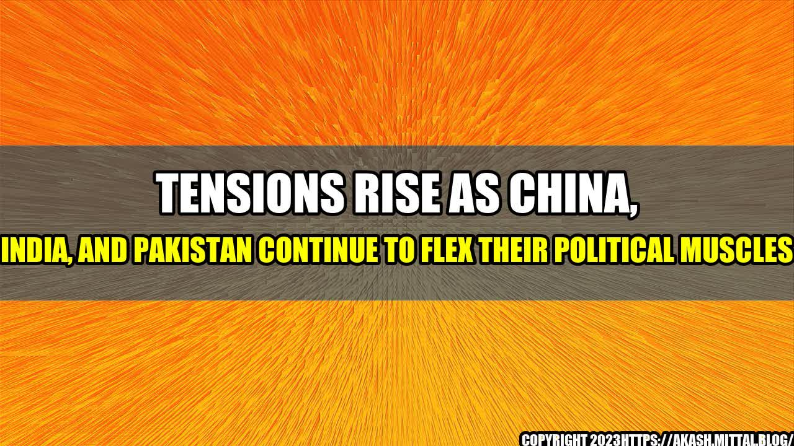

Tensions Rise As China, India, and Pakistan Continue to Flex Their Political Muscles

It was a hot summer day in the village of Pangong Tso, situated in the Ladakh region of India. A group of Indian soldiers patrolled the area near the Line of Actual Control (LAC) that separates India from China. As they stopped to take a break, several Chinese troops suddenly appeared on the scene, armed with iron rods and stones.
What happened next was a violent clash between the two sides, leaving multiple casualties on both sides and sparking an intense standoff between the two nations. This incident was just the tip of the iceberg in the ongoing territorial disputes between China and India, with neighboring Pakistan also inserting itself into the fray.
The Tensions Between China and India
The contentious issue at the heart of the conflict is a region situated in the Himalayan mountain range known as Aksai Chin. China controls much of the region, which is also claimed by India as part of its territory.
Since May 2020, Chinese soldiers have crossed the LAC on multiple occasions, leading to violent clashes with Indian forces. Both sides have accused the other of violating the de-facto border, with tensions escalating to the point of mobilizing troops, tanks, and artillery along the border region.
This ongoing territorial dispute has not only led to casualties on both sides, but it has also resulted in economic repercussions. Both countries are big trading partners, with China being India's second-largest trading partner. The border standoff has disrupted supply chains and dampened business confidence.
India has also taken steps to curb Chinese influence, such as banning several Chinese apps and tightening foreign investment rules.
the Impact
- The border standoff has led to a 27% decline in India's imports from China in the first half of 2020.
- The Indian government has banned over 200 Chinese apps, with over 118 million users affected.
- India's foreign direct investment from China fell from $350 million in 2018-19 to $163 million in 2019-20.
Pakistan's Political Game
Meanwhile, Pakistan has taken a strategic position by supporting China in its territorial dispute with India. Pakistan has its own troubled history with India, with both nations engaging in a long-standing territorial dispute over the Kashmir region. Pakistan has also accused India of supporting separatist movements in the Balochistan province.
This alignment between China and Pakistan has led to a series of military drills between the two nations, with the latest one held in October 2020.
Pakistan's Political Game
- Pakistan's army chief, General Qamar Javed Bajwa, has visited China multiple times since the border standoff began.
- Pakistan's Prime Minister, Imran Khan, has called for the international community to support China's position on the territorial dispute.
- Pakistan has provided military and diplomatic support to China on the issue, including blocking India's request for a conference on countering terrorism at the Shanghai Cooperation Organisation (SCO)
Conclusion: 3 Key Takeaways
- The territorial dispute between China and India has escalated to the point of violent clashes and economic repercussions. This ongoing conflict has not shown any signs of abating, with both countries taking a firm stance on their respective positions.
- Pakistan has aligned itself with China on the territorial dispute, further complicating the issue. Pakistan's strategic support for China is rooted in its own troubled history with India and its desire to maintain a counterbalance in the region.
- The implications of this conflict go beyond just the respective countries involved. The disruption to trade and supply chains can have a global impact, and the alignment between China and Pakistan could have wider geopolitical implications.
References and Hashtags
- References:
- India-China border dispute: A deadly clash prompts hard questions, BBC News
- China-India conflict hampers cross-border trade in South Asia, Nikkei Asia
- Pakistan Backs China on Hong Kong, Uighurs, and Indian Border Dispute, The Diplomat
- Hashtags:
- #ChinaIndiaConflict
- #IndiaChinaStandoff
- #PakistanChinaAlliance
- #Geopolitics
- #TerritorialDispute
- Article Category: Geopolitics and International Relations
Curated by Team Akash.Mittal.Blog
Share on Twitter Share on LinkedIn